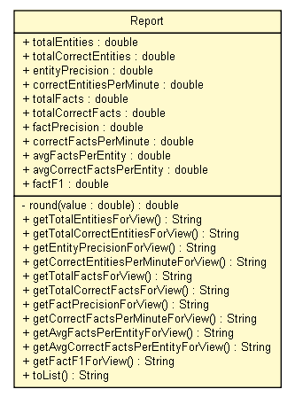

tud.iir.reporting
Class Report

java.lang.Object
 tud.iir.reporting.Report
tud.iir.reporting.Report
public class Report
- extends java.lang.Object
A Report is a list of measures and calculations.
measures: totalEntities, totalCorrectEntities, entityPrecision,
correctEntityPerMinute, totalFacts, totalCorrectFacts, factPrecision,
correctFactsPerMinute, avgFactsPerEntity, avgCorrectFactsPerEntity, factF1
define "correct" as having a corroboration over "minEntityCorroboration" and
"minFactCorroboration" as defined in the filter class
| Methods inherited from class java.lang.Object |
clone, equals, finalize, getClass, hashCode, notify, notifyAll, toString, wait, wait, wait |
totalEntities
public double totalEntities
- Values will be accessed through variables.
...ForView functions are normalized and made to print for view (in reports)
totalCorrectEntities
public double totalCorrectEntities
entityPrecision
public double entityPrecision
correctEntitiesPerMinute
public double correctEntitiesPerMinute
totalFacts
public double totalFacts
totalCorrectFacts
public double totalCorrectFacts
factPrecision
public double factPrecision
correctFactsPerMinute
public double correctFactsPerMinute
avgFactsPerEntity
public double avgFactsPerEntity
avgCorrectFactsPerEntity
public double avgCorrectFactsPerEntity
factF1
public double factF1
Report
public Report()
round
private double round(double value)
getTotalEntitiesForView
public java.lang.String getTotalEntitiesForView()
getTotalCorrectEntitiesForView
public java.lang.String getTotalCorrectEntitiesForView()
getEntityPrecisionForView
public java.lang.String getEntityPrecisionForView()
getCorrectEntitiesPerMinuteForView
public java.lang.String getCorrectEntitiesPerMinuteForView()
getTotalFactsForView
public java.lang.String getTotalFactsForView()
getTotalCorrectFactsForView
public java.lang.String getTotalCorrectFactsForView()
getFactPrecisionForView
public java.lang.String getFactPrecisionForView()
getCorrectFactsPerMinuteForView
public java.lang.String getCorrectFactsPerMinuteForView()
getAvgFactsPerEntityForView
public java.lang.String getAvgFactsPerEntityForView()
getAvgCorrectFactsPerEntityForView
public java.lang.String getAvgCorrectFactsPerEntityForView()
getFactF1ForView
public java.lang.String getFactF1ForView()
toList
public java.lang.String toList()
- For saving purposes return all report values as a list.